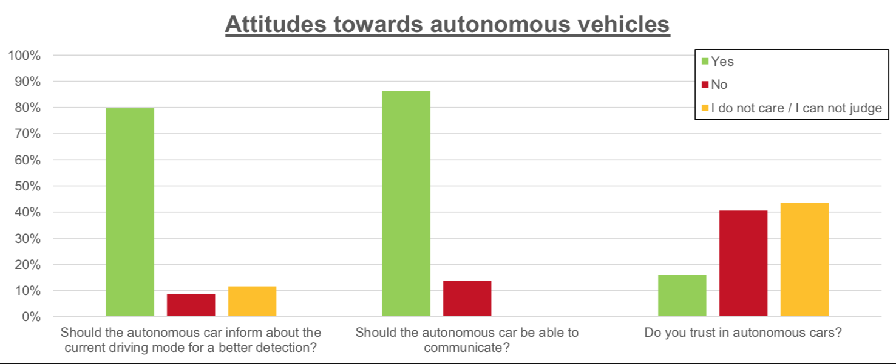
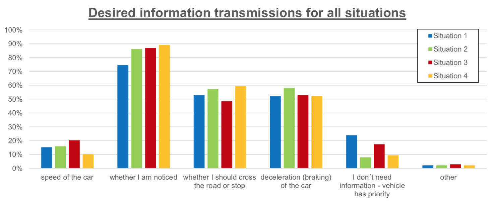
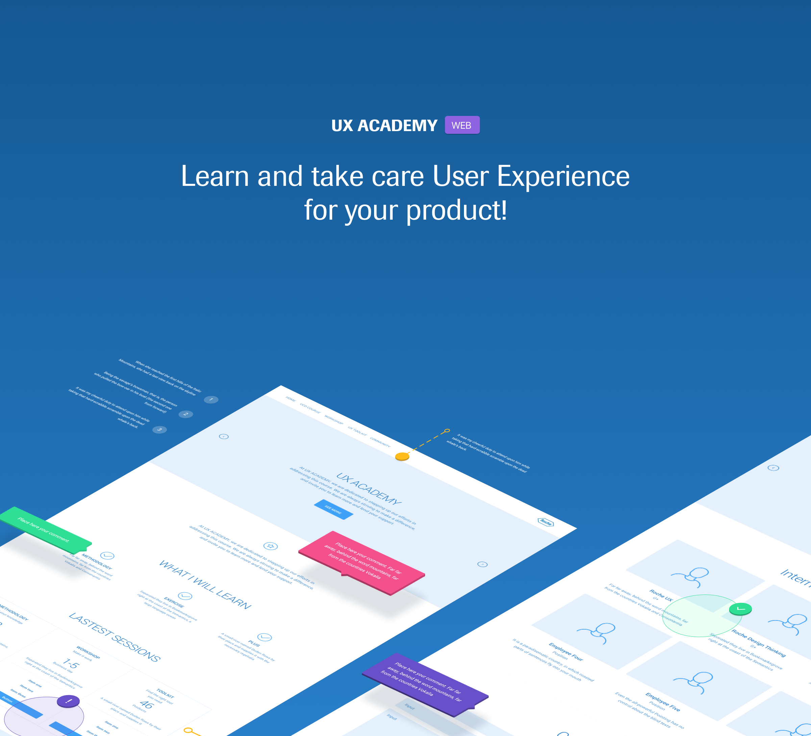

Timeline
July.2017 - May.2018
Timeline
July.2017 - May.2018
Location
Berlin, Germany
Basel, Switzerland
My Role
Master Thesis Work
Deliverables
Thesis PaperImportant factors that are calculated into pedestrian’s decision to cross the road include not only the vehicle’s speed but also the interactions with the driver (e.g., eye-contact, gestures, or head movement). However, with the rapid development of autonomous vehicle(AV), how will pedestrians make the decision in road crossing without human driver involved?
Attitude
Bingbing, female, Chinese, 26 years old, workplace new, non-French speaker, care about her skin, has passions in cosmetics, travelling in France at present.
Position
Bingbing, female, Chinese, 26 years old, workplace new, non-French speaker, care about her skin, has passions in cosmetics, travelling in France at present.

Desired Information
Bingbing, female, Chinese, 26 years old, workplace new, non-French speaker, care about her skin, has passions in cosmetics, travelling in France at present.
The purpose of this research was to investigate the usability of the designed communication concept that explicitly communicate intent of autonomous vehicle to pedestrians, focusing on conflict situations. The research relied on three-phase design process with focus group, participatory design and the user study approaches. The first two approaches aimed to gain insight on designing the communication concept, Based on the outcomes, we developed prototype videos and assessed them in the user study. Qualitative and quantitative data were collected in the form of post-study interview and questionnaire to explain the participant’s experience on designed concept.
Phase I: Focus Group
Bingbing, female, Chinese, 26 years old, workplace new, non-French speaker, care about her skin, has passions in cosmetics, travelling in France at present.
Phase II: Participatory Design
Bingbing, female, Chinese, 26 years old, workplace new, non-French speaker, care about her skin, has passions in cosmetics, travelling in France at present.
Phase III: User Study
Bingbing, female, Chinese, 26 years old, workplace new, non-French speaker, care about her skin, has passions in cosmetics, travelling in France at present.
This was my initial individual task to bring UX knowledge to team and provide trainings. By this internal UX academy site, roche employee could get the academic resources easily, get the quick guide to run a design-thinking workshop(agenda, slide template, tool kit), and find the in-house potential collaboration. In the end this became cross-team project with positive feedback, and still on going after I left. This the post of the site.
rMendem is an mobile app which can help you find the right mentor to learn and tandem to exchange language. It is a personal project beside of my internship initial scope since I saw the needs on matching between mentor and mentee, as well finding a language tandem in Roche.
Working on more content...
During my internship, I also supporting Roche DIA IT department to produce videos for in-house events or activities pre&after broadcast. Please enjoy one of my favorite production below, this was using for Christmas advent greetings of each departments in Roche DIA IT(pw needed so far):
The results indicate that in the AV-pedestrian communication concept: